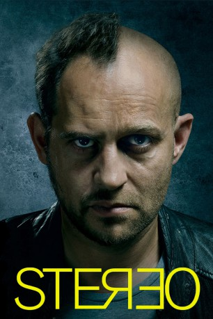

#1538 Stereo
 
 IMDB-Wertung: 6.6 / 10
IMDB-Wertung: 6.6 / 10  Metascore: 0
Metascore: 0 
Endlich weg vom Großstadtstress. Das denkt sich Erik als er mit seiner Freundin Julia und deren Tochter Linda in eine Kleinstadt auf dem Land zieht. Hier kann er sich endlich seiner Motorrad-Werkstatt widmen und die gemeinsame Familienidylle genießen. Dann aber taucht plötzlich Henry auf. Der mysteriöse Fremde hängt sich auf einmal an Erik ran und lässt ihn nicht mehr aus den Augen. Doch was will er? Erfolglos versucht der Familienvater, seinen ungewollten Schatten wieder loszuwerden, doch Henry denkt gar nicht daran, wieder abzuhauen und treibt Erik bald in den Wahnsinn. Der Albtraum geht aber noch weiter: Es tauchen nämlich die zwei Gangster Keitel und Wolfgang auf, die behaupten, den Motorrad-Mechaniker zu kennen. Sie werden bald zum echten Problem und so bleibt Erik am Ende nichts anderes übrig, als sich hilfesuchend an Henry zu wenden...
Jahr: 2014
Dauer: 98 Minuten
FSK: 16
Land: Deutschland Studio: Wild BunchTonspuren:
Untertitel: Deutsch,
Auflösung: 1080p (1920x800) Größe: 5314 MB
Genre: Thriller
Regisseur: Maximilian Erlenwein
Drehbuch: Maximilian Erlenwein
Soundtrack: Enis Rotthoff
Darsteller:
 Jürgen Vogel als Erik
Jürgen Vogel als Erik Moritz Bleibtreu als Henry
Moritz Bleibtreu als Henry- Petra Schmidt-Schaller als Julia
 Georg Friedrich als Keitel
Georg Friedrich als Keitel Rainer Bock als Wolfgang
Rainer Bock als Wolfgang- Adrian Can als Deisler
- Helena Schönfelder als Linda
- Mark Zak als Gaspar
- Fabian Hinrichs als Arzt
- Valery Tscheplanowa als Frau Saurion
- Jürgen Holtz als Herr Jagoda
- Paul Fassnacht als Hansen
- Julian Schmieder als Kowalski
- Gerdy Zint als Schröder
- Sophie Melbinger als Karin
- Petra Hartung als Kindergärtnerin
- Martin Reik als Barkeeper
- Florian Liebegott als Junge 1
- Johann Liebegott als Junge 2
- Markus Wiemann als Scherge
- Torsten Peter Schnick als Monitor Operator
Datei: X:\2014(N-Z)\Stereo (2014, FSK16, 1920x800).mkv seit 14.07.2015
Festplatte: HD 2013(I-Z)-2014(A-Z)
 Es gibt insgesamt 163 Filme in der Gruppe '2014(N-Z)'
Es gibt insgesamt 163 Filme in der Gruppe '2014(N-Z)'